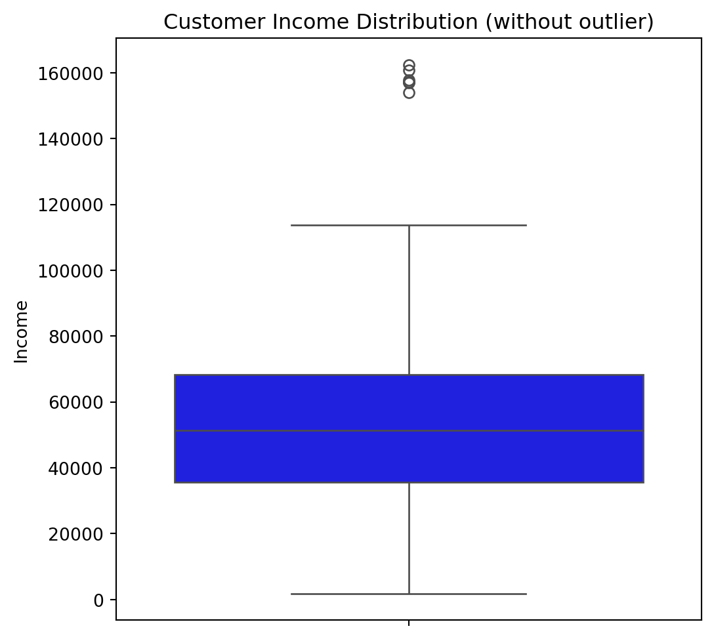

Projeto de Análise de Clientes para Shopping Center
Author
Gabriel Ferreira
Published
September 18, 2024
Introdução
Este projeto foi realizado a partir de um conjunto de dados real, proveniente de um shopping center, com o objetivo principal de estudar as características e os padrões de compra de seus clientes. Através de uma análise de dados de ponta a ponta (E2E), desde o tratamento e limpeza iniciais até a criação de visualizações, buscando não apenas descrever o comportamento do consumidor, mas também fornecer insights acionáveis que podem orientar decisões estratégicas, vendas e gestão da experiência do cliente.
A meta é transformar dados brutos em conhecimento estratégico, permitindo que o shopping center otimize suas operações, personalize suas ofertas e maximize o valor para cada cliente.
Estrutura do Projeto
O desenvolvimento deste projeto seguiu uma metodologia estruturada para garantir a precisão e confiabilidade dos insights extraídos, abrangendo desde a coleta e preparação dos dados até a avaliação e interpretação dos resultados. Cada fase, desde a extração dos dados até a interpretação das visualizações, foi executada com atenção aos detalhes e foco na maximização do valor analítico.
Coleta e Pré-processamento dos dados
A qualidade dos dados é o pilar de qualquer análise. Nesta fase, temos que garantir que o dataset estivesse impecável e pronto para o processamento.
Carregamento e Visão Inicial dos Dados
Fonte dos Dados: Dados colhidos de um shopping center em Singapura
O ponto de partida foi o carregamento do conjunto de dados dataset. A primeira informação 28 colunas, cobrindo uma vasta gama de informações sobre os clientes, desde dados demográficos e status civil até comportamentos de compra e interações com campanhas promocionais.
Identificamos que a coluna Income (renda) estava formatada como um objeto (object) devido à presença de caracteres especiais como o cifrão ($) e vírgulas (,), para que pudéssemos realizar operações numéricas e análises estatísticas, então convertemos essa coluna para um tipo float e, adicionalmente, um espaço em branco inicial no nome da coluna foi corrigido para facilitar a manipulação. A coluna Dt_Customer (data de cadastro do cliente) também estava como object e não era reconhecida como um formato de data. A conversão para o tipo datetime é necessária para análises temporais, como a idade do cliente no momento do cadastro ou padrões de adesão ao longo do tempo.
Após a conversão para tipo numérico, a coluna Income ainda apresenta 24 valores ausentes. Para decidir a melhor estratégia de preenchimento (imputação) ou remoção, investigamos a distribuição estatística da variável
Resumo Estatístico da variável Income:
Mostrar Código
df['Income'].describe()
count 2216.000000
mean 52247.251354
std 25173.076661
min 1730.000000
25% 35303.000000
50% 51381.500000
75% 68522.000000
max 666666.000000
Name: Income, dtype: float64
A análise revelou uma diferença significativa entre a média (52.247)e a mediana(51.381). Mais notavelmente, o valor máximo (666.666)extremamente distante do terceiroquartil (68.522), um forte indicativo da presença de outliers (valores atípicos). Esses valores extremos teriam um impacto desproporcional na média, tornando-a uma representação não confiável da tendência central dos dados.
Decisão: Optamos por substituir os valores ausentes pela mediana da renda, visto que a mediana é uma medida de tendência central mais robusta e menos sensível a valores extremos, garantindo que a imputação não distorcesse a distribuição real da renda dos clientes e, consequentemente, a análise de perfil.
Substituindo Valores Ausentes pela Mediana na Variável Renda:
Embora tenhamos feito a imputação dos valores ausentes tenha com a mediana, a existência de valores extremos pode influenciar negativamente modelos e visualizações, por isso vamos analisar como esta distribuída a variável renda
Distribuição da variável renda:
Mostrar Código
plt.figure(figsize = (6, 6))plt.title("Distribuição de Renda dos Clientes")sns.boxplot(data = df['Income'], color ='blue')
A presença do outlier de $666.666 na renda era notória e, dada a magnitude do dataset e a singularidade desse ponto, a remoção direta desse outlier foi considerada apropriada para evitar ruídos e garantir que a análise refletisse a distribuição mais representativa da renda dos clientes.
Removendo o outlier e visualizando novamente a variável:
Mostrar Código
df = df[df['Income'] !=666666.0]plt.figure(figsize = (6, 6))plt.title("Distribuição de Renda dos Clientes (sem o outlier)")sns.boxplot(data = df['Income'], color ='blue')

A visualização da distribuição da renda através de um boxplot, tanto antes quanto depois da remoção do outlier, comprovou a eficácia dessa intervenção, resultando em uma representação mais limpa, preservando o perfil dos clientes.
Engenharia de Atributos (Feature Engineering)
A criação de novas variáveis, ou Feature Engineering, é um passo importante para enriquecer o dataset e extrair insights mais complexos e relevantes de variáveis que estão implicítas a partir das colunas existentes. Então foram construídas métricas que capturam informações sobre o perfil e o comportamento dos clientes.
a) Idade do Cliente no Cadastro (Customer_Age_When_Enrolled)
Para entender a faixa etária dos clientes no momento em que se cadastraram no shopping, uma nova coluna foi criada subtraindo o ano de nascimento (Year_Birth) do ano de cadastro (Dt_Customer). Esta métrica é importante para campanhas segmentadas por faixa etária, indicando o público-alvo principal.
A divisão dos gastos em categorias de produtos (vinhos, frutas, carnes, peixes, doces e ouro) é informativa, mas uma métrica consolidada do “Gasto Total” oferece uma visão macro do valor de cada cliente para o shopping. Isso permite identificar clientes de alto valor e entender o poder de compra geral.
Similar ao gasto total, a soma das diferentes modalidades de compra (promoções, web, catálogo e loja física) fornece uma métrica unificada da frequência e engajamento do cliente com o shopping.
d) Presença de Crianças e Adolescentes em Casa (Kids_Teen_at_home)
A união das informações sobre Kidhome (crianças em casa) e Teenhome (adolescentes em casa) em uma única variável simplifica a análise e permite identificar clientes com responsabilidades familiares, um fator que pode influenciar significativamente os padrões de compra (ex: busca por produtos para família, entretenimento infantil, etc.).
Após a criação das features agregadas, as colunas originais Kidhome e Teenhome foram removidas para evitar redundância e simplificar o dataset, mantendo apenas as variáveis mais informativas para a análise subsequente.
Removendo colunas originais:
Mostrar Código
df = df.drop(['Kidhome', 'Teenhome'], axis =1)
Re-verificação e Tratamentos de Outliers com IQR
Para garantir a qualidade dos novos atributos e das colunas já existentes, foi realizada uma nova verificação de outliers utilizando o método do Intervalo Interquartil (IQR) para as features mais relevantes para a análise (Customer_Age_When_Enrolled, Total_Spent, Total_Purchases, Kids_Teen_at_home). A régua de 2 vezes o IQR foi aplicado para uma detecção mais sensível.
Definindo colunas de interesse, criando a função e aplicando nas colunas definidas para identificação de outliers:
Foi constatado que apenas 3 outliers persistiam na variável Customer_Age_When_Enrolled, representando um percentual muito baixo (0.13%) do dataset.
Para melhor visualização vamos analisar o boxplot dessas variáveis:
Boxplot das variáveis de interesse:
Mostrar Código
plt.figure(figsize=(12,6))for i, coluna inenumerate(colunas): plt.subplot(1, len(colunas), i+1) sns.boxplot(y=df[coluna]) plt.title(coluna)plt.tight_layout()plt.show()
Identificação dos outliers encontrados:
Mostrar Código
for coluna in colunas: res = detectar_outliers_iqr(df[coluna]) outliers = res['outliers']ifnot outliers.empty:print(f"\nColuna: '{coluna}'")print(outliers)
Esses valores extremamente atípicos (idades como 113, 114 e 121 anos, provavelmente erros de registro) foram removidos para evitar qualquer ruído ou distorção em futuras análises de idade, que são cruciais para a segmentação de clientes.
O dataset resultante, com 2.236 linhas e 30 colunas, está agora limpo, mais completo com as novas features e pronto para a fase de análise exploratória.
Análise Exploratória dos Dados e Visualizações de Insights
Análise da Idade dos Clientes:
Mostrar Código
plt.figure(figsize = (6, 6))plt.title("Distribuição da Idade dos Clientes")sns.violinplot(data = df['Customer_Age_When_Enrolled'], color ='purple')
A distribuição da idade dos clientes, visualizada através de um violin plot, revelou uma característica demográfica marcante: a maioria dos clientes concentra-se na faixa etária dos 35 aos 45 anos. Este dado é de suma importância, ele aponta para o principal nicho de mercado do shopping, indicando que as estratégias de marketing, a seleção de produtos e serviços, e até mesmo os eventos promocionais, devem ser direcionados para atender às necessidades e preferências desse grupo demográfico específico. Clientes nesta faixa etária geralmente possuem maior poder de compra e estabilidade financeira, sendo um público-alvo altamente valioso.
Distribuição por Nível de Escolaridade:
Mostrar Código
education_counts = df['Education'].value_counts()plt.figure(figsize = (14, 8))plt.title("Distribuição da Clientes por Nível de Escolaridade")sns.countplot(x = df['Education'], palette ='rocket_r')
A análise da escolaridade dos clientes, através de um count plot, destacou a predominância de clientes com Graduação, seguidos por aqueles com PhD e Mestrado. A minoria detém apenas o nível básico de escolaridade. Este padrão educacional sugere um perfil de cliente que valoriza qualidade, talvez com maior acesso à informação e poder de decisão sobre suas compras. Compreender essa característica pode influenciar a comunicação, o tipo de lojas e serviços oferecidos, e a abordagem de vendas, que pode ser mais sofisticada e focada em valor.
Perfil por Estado Civil:
Mostrar Código
# Criando um df para armazernar a contagem de cada tipo de estado civilestado_civil = df['Marital_Status'].value_counts().to_frame('Count')# Criando o graficosns.set_palette('Blues_r')plt.figure(figsize = (4, 7))plt.pie(estado_civil['Count'], labels = estado_civil.index, explode = (0.1, 0, 0, 0, 0, 1, 2.5, 4), shadow =True, autopct ='%1.1f%%')plt.show()
A distribuição do estado civil, ilustrada por um pie chart, revelou que a maior parte dos clientes é casada ou vive junto (Together), seguidos pelos solteiros. A predominância de casais sugere que muitas decisões de compra podem ser influenciadas por dinâmicas familiares. Isso pode abrir oportunidades para promoções e eventos direcionados a casais ou famílias, bem como para a oferta de produtos e serviços que atendam a múltiplos membros do lar.
Distribuição de Renda e Padrões de Gasto:
Mostrar Código
df = df[df['Income'] <200000]plt.figure(figsize = (12,7))sns.distplot(df['Income'], color ='magenta')plt.xlabel('Salario')plt.ylabel('Densidade')plt.show()
A análise da distribuição de renda, através de um distplot, confirmou que a grande maioria dos clientes possui renda em torno de $50.000. Embora a distribuição seja aproximadamente normal, alguns clientes apresentam renda superiora $150.000. Esta concentração indica um público com um poder de compra mediano-alto, que pode ser sensível a propostas de valor, mas também busca produtos e serviços que justifiquem o investimento. Os clientes de renda mais elevada, embora em menor número, representam um segmento de alto potencial para produtos e serviços premium.
Relação entre Renda e Escolaridade:
Mostrar Código
sns.set_palette('rocket')plt.figure(figsize = (12, 7))sns.violinplot(y = df['Income'], x = df['Education'])plt.xlabel('Nível Educacional')plt.ylabel('Salario')plt.show()
A relação entre renda e escolaridade, explorada por um violin plot, validou uma tendência comum: quanto maior o nível de escolaridade, maior a renda. Esta correlação reforça o perfil do cliente como sendo melhor educado com boa capacidade financeira. Lojas e marcas que alinharem seus produtos e sua comunicação a um público intelectualizado e com aspirações de qualidade se beneficiarão mais nesse ambiente.
Relação entre Renda e Gastos com Produtos de Ouro:
Mostrar Código
plt.figure(figsize = (12, 7))sns.regplot(x = df['Income'], y = df['MntGoldProds'], color ='green')plt.xlabel('Salario')plt.ylabel('Gasto com Produtos de Ouro')plt.show()
A relação entre renda e gastos com produtos de ouro, visualizada por um regplot, demonstrou uma clara tendência positiva: clientes com maior renda tendem a gastar mais em produtos de ouro. Este é um indicador interessante do poder aquisitivo e do gosto dos clientes. Ouro e outros produtos de alto valor agregado podem ser promovidos de forma mais eficaz para o segmento de maior renda, talvez através de experiências de compra exclusivas ou programas de fidelidade diferenciados.
Relação entre Renda e Gasto Total em Compras:
Mostrar Código
plt.figure(figsize = (12, 7))sns.regplot(x = df['Income'], y = df['Total_Spent'], color ='red')plt.xlabel('Salario')plt.ylabel('Gasto Total em Compras')plt.show()
Ainda mais importante, a análise da relação entre renda e gasto total em compras, também através de um regplot, confirmou uma relação positiva robusta: clientes com maior renda naturalmente contribuem com um volume maior de gastos no shopping. Este é um dos insights mais fundamentais, reforça a importância de atrair e reter clientes de alta renda, pois eles são a espinha dorsal do faturamento. Estratégias que visam aumentar a renda disponível ou a percepção de valor para esses clientes podem ter um impacto direto e significativo nos resultados financeiros.
Idade dos Clientes na Data de Cadastro:
Mostrar Código
plt.figure(figsize = (7, 5))sns.distplot(df['Customer_Age_When_Enrolled'], color ='brown')plt.xlabel('Idade do Cliente na Data do Cadastro')plt.ylabel('Densidade')plt.show()
A distribuição da idade dos clientes na data de cadastro, um distplot, reiterou a concentração de clientes na faixa dos 40 anos. Isso solidifica a ideia de que o shopping tem um forte apelo para um público mais maduro e estabelecido, consolidando um nicho de mercado importante e consistente. A comunicação e as ofertas devem ressoar com os interesses e o estilo de vida dessa demografia.
Distribuição de Clientes por País de Origem:
Mostrar Código
plt.figure(figsize=(12, 6))sns.countplot( x='Country', data=df, palette='icefire_r', order=df['Country'].value_counts().index)plt.xlabel('País', fontsize=12)plt.ylabel('Número de Clientes', fontsize=12)plt.tight_layout()plt.show()
A análise da distribuição de clientes por país, utilizando um countplot, revelou uma clara concentração de clientes no país de origem do dataset, Singapura, seguido por Arábia Saudita e Canadá. A dominância de Singapura é esperada e reforça a base local do shopping. A presença significativa de clientes da Arábia Saudita e Canadá indica uma possível clientela internacional ou de alto poder aquisitivo que pode estar visitando a região. Isso abre caminho para estratégias de turismo de compras e parcerias com agências de viagem, ou mesmo a adaptação de ofertas para culturas específicas.
Um violin plot comparando o país de origem com o total de compras mostrou que, em geral, os países apresentam um comportamento de compra similar. No entanto, houve exceções notáveis: os Estados Unidos apresentaram alguns clientes com valores de compra significativamente mais altos, enquanto o México exibiu um comportamento distintamente diferente dos demais. Isso sugere que, embora o perfil médio de compra seja consistente, há nichos de mercado em países específicos, como os clientes “super compradores” dos EUA, que merecem atenção especial. Para o México, um estudo mais aprofundado do porquê de seu comportamento divergente poderia revelar oportunidades ou desafios específicos.
A análise do gasto total agregado por país, através de um pie chart, confirmou o que já era intuído: a maioria do faturamento provém de Singapura, seguida pela Arábia Saudita, que juntas respondem por quase 55% do total em compras. Essa concentração de valor em dois países reforça a necessidade de focar os esforços de retenção e engajamento nesses mercados primários. Estratégias personalizadas e campanhas de fidelidade para clientes de Singapura e Arábia Saudita são cruciais para a saúde financeira do shopping.
A distribuição dos cadastros de clientes ao longo dos meses do ano, apresentada em um bar chart, revelou que o processo de aquisição é relativamente bem distribuído. Houve uma leve baixa nos meses de Junho e Julho, o que pode ser sazonal ou indicar oportunidades para campanhas de aquisição nesses períodos. A estabilidade nos cadastros mensais é um bom sinal. As leves quedas em Junho e Julho podem ser alvo de ações de marketing específicas para impulsionar a aquisição durante esses meses, talvez com promoções exclusivas para novos cadastros ou eventos temáticos
Conclusão
Esta análise do perfil dos clientes do shopping center revelou insights cruciais que podem guiar futuras estratégias de negócios. Ao compreender quem são os clientes, de onde vêm, qual seu poder aquisitivo e seus hábitos de compra, o shopping pode otimizar significativamente suas operações.
Principais Insights do Projeto:
Público-Alvo Definido: O shopping atrai predominantemente um público adulto, com idade entre 35 e 45 anos, com alta escolaridade (Graduação, PhD, Mestre) e majoritariamente casado ou em união estável. Este é o seu core business e deve ser o foco principal.
Poder de Compra Consistente: A maioria dos clientes possui renda concentrada em torno de $50.000, com uma clara correlação positiva entre renda, escolaridade e gastos totais (incluindo produtos de alto valor como ouro). Isso valida a estratégia de focar em um público que busca qualidade e tem capacidade de investimento.
Base de Clientes Geográfica: Embora diversificada, a base de clientes é majoritariamente local (Singapura) com uma notável contribuição da Arábia Saudita e Canadá. Isso sugere oportunidades para otimizar estratégias tanto para o mercado doméstico quanto para o turismo de compras.
Comportamentos Específicos por País: A identificação de clientes de alto gasto nos EUA e um padrão diferente no México aponta para a necessidade de abordagens segmentadas por país para maximizar o retorno.
Estabilidade na Aquisição: Os cadastros de clientes são bem distribuídos ao longo do ano, com pequenas quedas em Junho e Julho, que podem ser oportunidades para campanhas de aquisição direcionadas.
Este projeto demonstra como uma análise de dados bem executada pode ir além dos números, fornecendo uma base sólida para a tomada de decisões estratégicas que impulsionam o crescimento e a satisfação do cliente em um ambiente de varejo altamente competitivo. É uma prova do poder da Ciência de Dados em transformar informações em inteligência de negócios acionável.